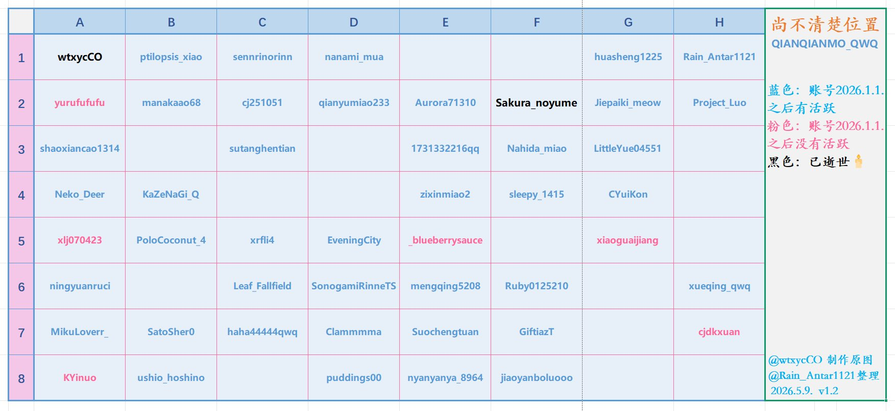

Rain Antares🏳️⚧️🍥
@Rain_Antar1121
@songguotilamisu 嗯呢！谢谢你～之前就找到了呢ww，咱马上换一个展示现在进度的置顶喵…🥺
现在是下面这个状态…

Pine cone 🏳️⚧️🍥
@songguotilamisu
@Rain_Antar1121 @wtxycCO 第四行第二个是BH2VSQ吧，也是ham
Rain Antares🏳️⚧️🍥
@Rain_Antar1121
在这里也附上目前的统计…欢迎大家继续寻找和提供关于这些熟悉面孔的任何信息哦，也可以建议找寻的方法…明明很眼熟但就是好难找到你们呐抱歉…(.﹒︣︿﹒︣.)
如果未来有相当进展的话咱会继续更新这项统计的喵≽^•༚• ྀི≼ https://t.co/DkDN2Uj1YJ